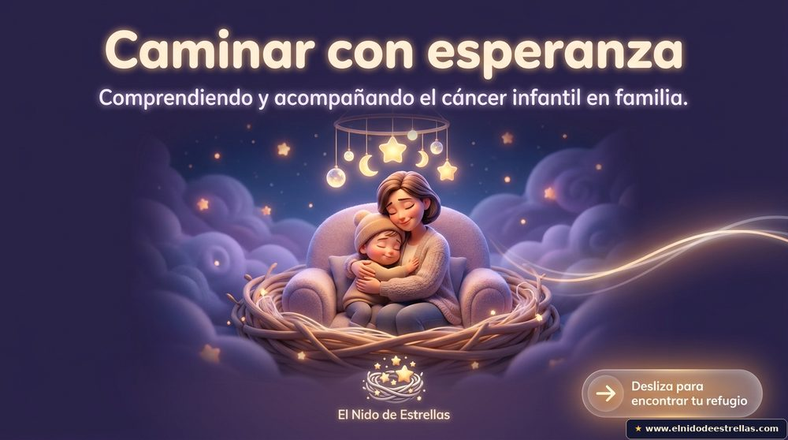

Recursos gratuitos para familias
Una guía en PDF, hecha con rigor y mucho cariño, para acompañarte en uno de los momentos más difíciles. Descárgala gratis y compártela con quien la necesite.

Caminar con esperanza
Una guía clínica y emocional para las familias que afrontan el cáncer infantil: cómo dar la noticia, cómo hablar con tu hijo con sinceridad, el poder de las rutinas y cómo sostener la esperanza sin dejar de cuidarte tú.
Descargar el PDF gratisEste recurso es gratuito y siempre lo será. Está hecho con cariño para acompañar a tu familia, paso a paso y día a día. 🌟